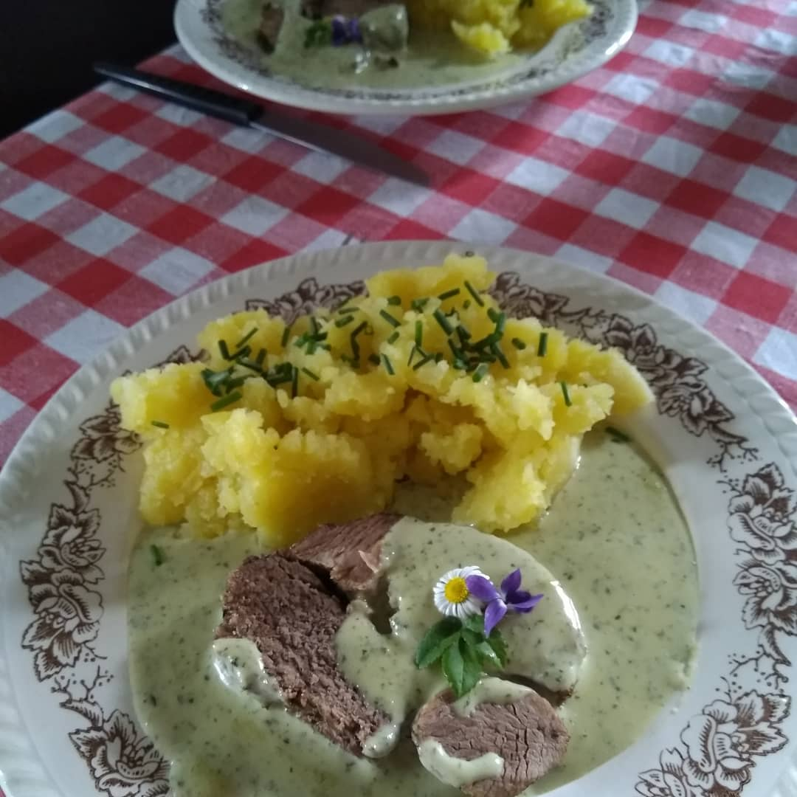

Bylinková omáčka podľa @na.samote.u.trati — Normy Jedál
Některé kulinářské pokusy se podaří, některé méně 🙈😄
V tomto případě jsme se oba shodli na tom, že je to pokus vydařený 😋
- pečené jehněčí maso se smetanovou omáčkou z divokých bylinek a šťouchané brambory.
#velikonocniobed #svatecniobed #velikonoce #jehnecimaso #pecenejehneci #smetanovaomacka #bylinkovaomacka #divokebylinky #jaronataliri #dnesvarim